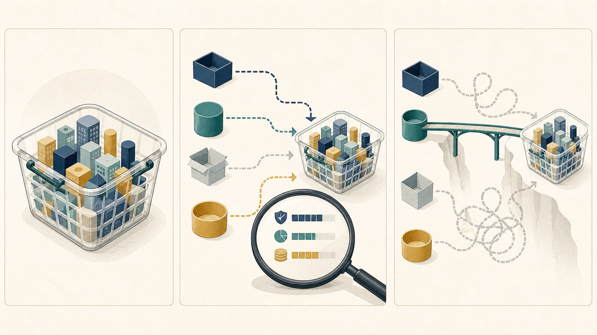

BLOG ESSAY阅读官网原文 →
找不到首选基金时，先找同功能替代品
J.L. Collins Stock Series · 官网文章，发布于2013年5月2日
为何适合你长期指数投资资产配置风险控制专业知识讲解
核心主张：具体基金不是目标，目标是以可获得、低成本、覆盖合适的工具实现既定市场暴露。首选产品不可用时，先比较底层指数、总成本和账户约束；若简单替代已经足够接近，就没有必要为追求形式上的完整而拼出复杂组合。
- 同一底层组合可能通过不同份额类别、共同基金或ETF提供；名称不同不等于功能不同，但交易佣金、买卖价差和持续费率会改变真实成本。
- 品牌或总市场基金不可得时，低成本的广泛指数基金可以承担相近任务；作者甚至认为，在美国雇主计划中用多只基金精确复制总市场，复杂度可能不值得。
- 全球基金是否包含美国市场、账户能否购买以及税务规则都会改变可替代性；比较前必须先把覆盖范围、费用和制度边界说清楚。
“Here’s what you are looking for: A low-cost Index Fund.”
今天连接：今天的成品油调价与美联储讲话分别提示经营成本和贴现率约束会变化。文章提供的可迁移视角，是把产品选择还原为底层任务、可得性与总成本比较，而不是把某个品牌或代码当成目标本身。
不要这样做：阅读边界：文章列举的基金、比例、雇主匹配和退休账户属于美国案例，只用于说明功能替代逻辑；不能据此复制具体产品、比例或跨境账户安排。

- 先说明要覆盖的市场和资产在组合中承担的任务。
- 再核验候选工具的底层指数、覆盖范围、持续费用、交易摩擦与账户准入。
- 最后比较偏差与复杂度；图示只解释方法，不对应任何具体基金或比例。